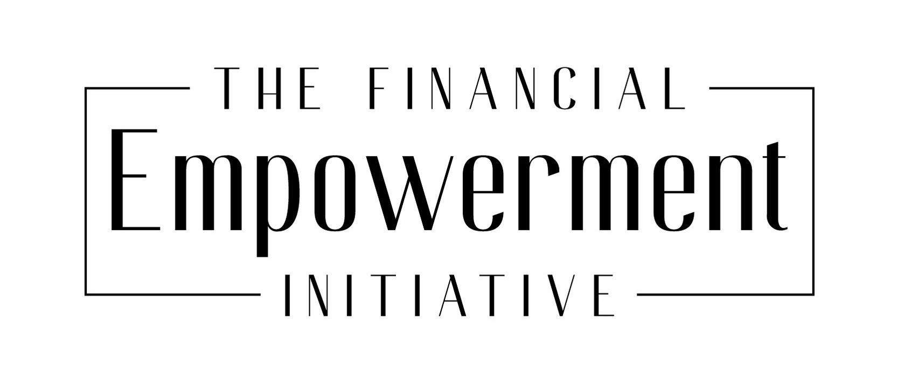

Our Investigative Projects
-
Project 1: Uncovering Financial Scandals
A deep dive into major financial scandals, exposing corruption and revealing the impact on society and economy.
-
Project 2: Financial Empowerment Initiatives
An exploration of programs and strategies empowering individuals and businesses financially, with a focus on inclusive growth and economic resilience.
>
-
Project 3: Investment Trends Analysis
An analysis of investment trends, market shifts, and emerging opportunities, providing insights for investors and financial analysts.